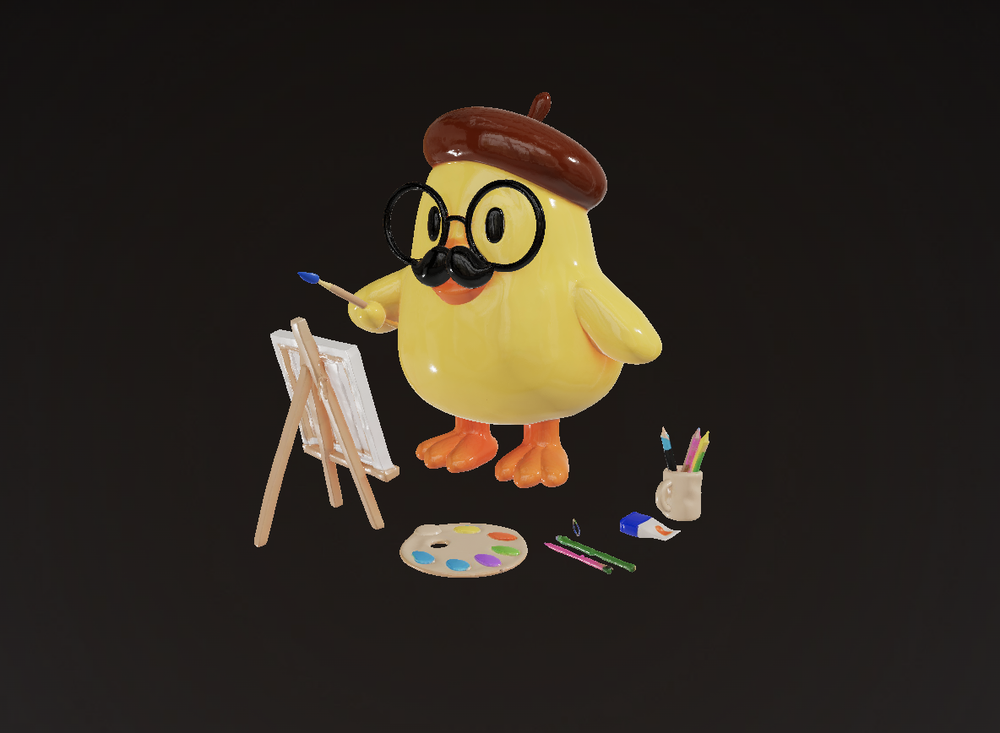

Visualizar em Realidade Aumentada
camera-controls touch-action="pan-y" exposure="1" shadow-intensity="1" tone-mapping="aces" environment-image="neutral" poster="capa.jpg" reveal="interaction" alt="Modelo 3D para visualizar em AR">
Ver em AR
